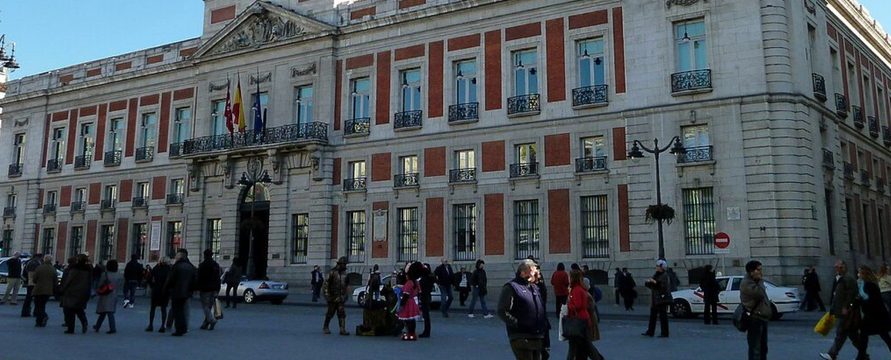

Castilla de León
VIDEOS
Castilla y León es una región rica en historia y cultura, con una oferta variada de actividades turísticas, culturales y recreativas. Desde sus majestuosos monumentos históricos, como la Catedral de Burgos y el Acueducto de Segovia, hasta sus encantadores paisajes naturales como las Hoces del Duratón y los Picos de Europa, Castilla y León ofrece una experiencia inolvidable para cada visitante. Además, la región cuenta con una destacada oferta gastronómica, incluyendo especialidades como el lechazo asado, la morcilla de Burgos y los vinos de la Ribera del Duero.
Las ciudades y pueblos de Castilla y León reflejan su rica herencia histórica, con lugares como Salamanca, Valladolid y Ávila, que invitan a explorar su impresionante arquitectura, universidades antiguas y festividades locales. La vida cultural en Castilla y León es vibrante, con eventos como la Semana Santa y las fiestas patronales que atraen a numerosos visitantes cada año.
Además, Castilla y León ofrece numerosas oportunidades para actividades al aire libre, como el senderismo, el ciclismo y la observación de aves en sus numerosos parques naturales y reservas. Ya sea en sus históricas ciudades o en su impresionante naturaleza, Castilla y León proporciona experiencias únicas y memorables para todo tipo de viajeros.